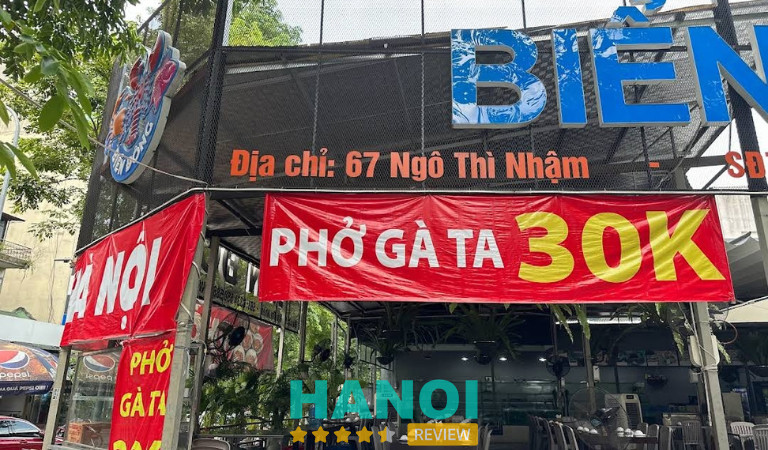
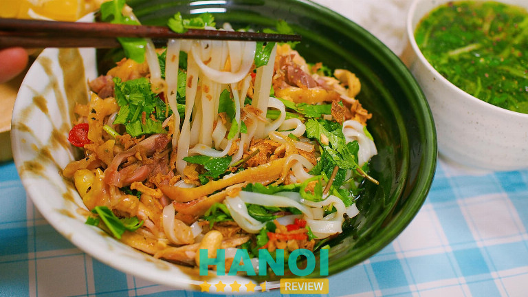
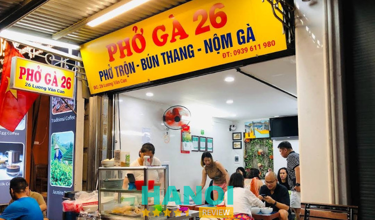
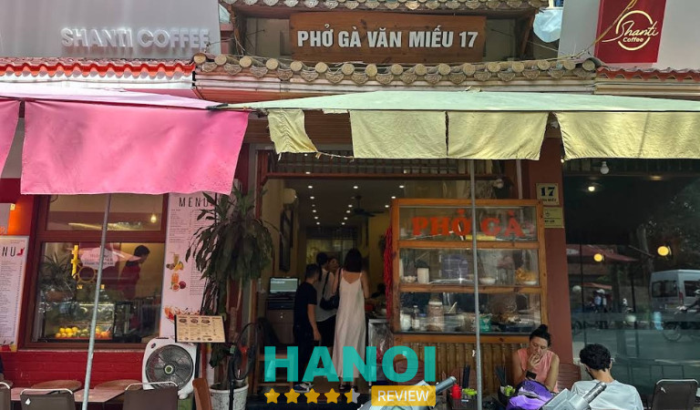
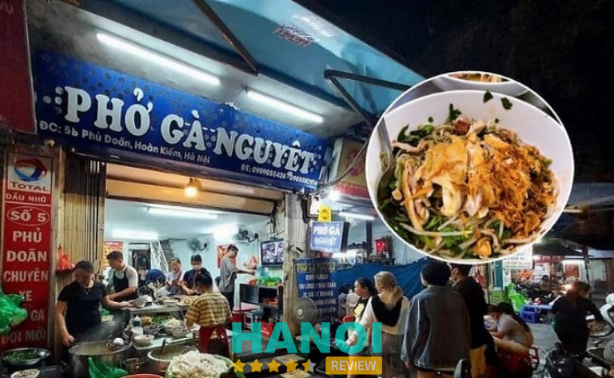
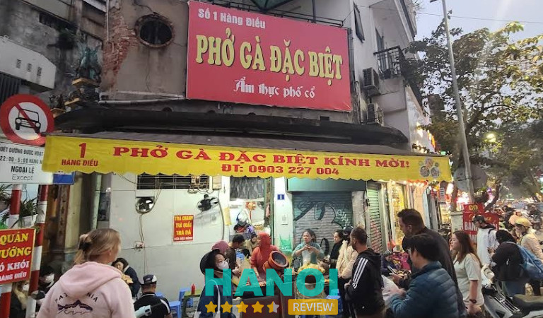
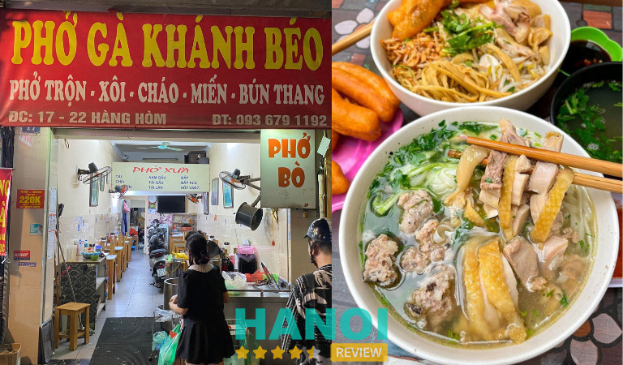
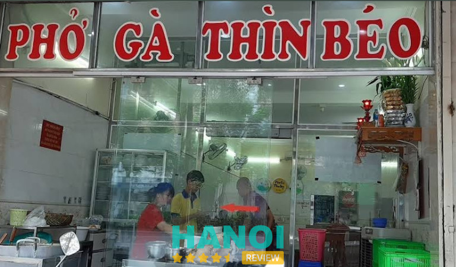
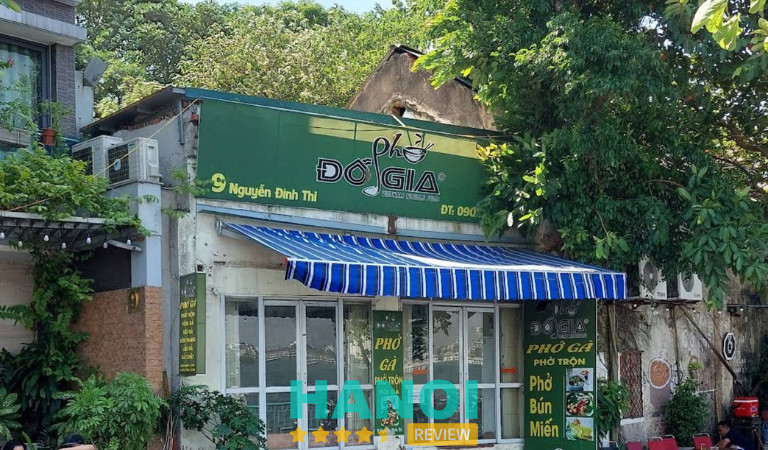
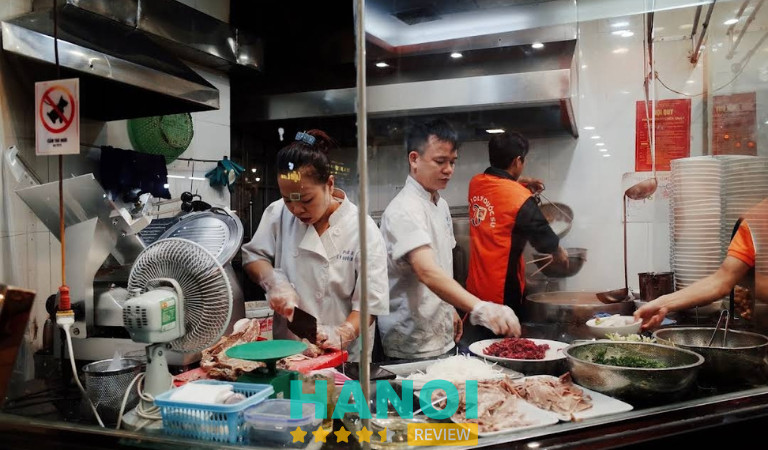

10 Quán phở gà tại Hà Nội ngon nức tiếng, khách đông nườm nượp
Phở gà từ lâu là món gây thương nhớ trong lòng biết bao người Hà Nội. Để tìm một quán phở gà tại Hà Nội chuẩn vị, thơm ngon có tiếng là việc tưởng dễ nhưng lại vô cùng khó nếu bạn là du khách và không sành về đường đi nước bước ở đây.
Top 10 quán phở gà tại Hà Nội hút khách, ngon chuẩn vị nhất
Phở gà được xem là một trong những món ăn đặc sản ở Hà Nội. Dù bạn đi trên bất kỳ con phố nào cũng rất dễ dàng bắt gặp các hàng quán bán món này. Tuy nhiên không phải hàng nào cũng bán ngon, hợp khẩu vị, giá thành phải chăng. Trong bài viết này, HaNoiReview sẽ tổng hợp và chọn lọc ra top 10 quán phở hút khách và nhận được nhiều đánh giá tốt nhất để bạn tham khảo, cân nhắc lựa chọn.
Phở gà Hà Nội
Phở đối với người Hà Nội không chỉ là món ăn sáng quen thuộc mà còn là một nét văn hóa ẩm thực đặc trưng riêng. Giữa những hàng quán ngày càng cạnh tranh nhau, Phở Gà Hà Nội vẫn luôn nổi bật và giữ chân được nhiều thực khách nhất nhờ có hương vị truyền thống không lẫn vào đâu được.
Điểm nhấn đặc trưng của quán đó chính là nước dùng phở. Phần nước dùng ở đây luôn được đánh giá cao với màu trong vắt, vị đậm đà và hương thơm đặc trưng. Cho dù bạn đi bất cứ hàng quán khác cũng đều không tim được mùi vị giống như ở Phở Gà Hà Nội. Sợi phở thì có độ mềm dai vừa phải, khi chan cùng nước dùng thì thấm đẫm, hòa quyện một cách hoàn hảo.

Đặc biệt hơn nữa, quán chỉ sử dụng gà ta thả vườn nên đảm bảo chắc thịt, có độ dai giòn và không bị bở. Do đó, nơi đây chính là điểm đến lý tưởng dành cho những ai muốn thưởng thức món phở gà đúng chuẩn, chất lượng đảm bảo.
Một ưu điểm khác của quán đó là sở hữu không gian khá rộng rãi, sạch sẽ và thoáng mát, có sức chứa gần 100 khách. Nhân viên phục vụ nhanh chóng, chuyên nghiệp và niềm nở với khách. Chính vì vậy, nơi đây rất thích hợp để cùng gian đình, bạn bè thưởng thức ẩm thực vào những ngày cuối tuần.
Thông tin liên hệ:
- Địa chỉ: 67 Ngô Thì Nhậm, P. Phạm Đình Hổ, Quận Hai Bà Trưng, Hà Nội
- Điện thoại: 0931 269 289
Xem thêm: 5 Quán lẩu cua đồng tại Hà Nội ngon nức tiếng, nên thử một lần
Phở Huấn
Cũng là phở gà nhưng thay vì dùng nước, ở Hà Nội còn có cách ăn khác đó là trộn. Một gợi ý khác dành cho những ai muốn thử món phở gà trộn ngon tại Hà Nội thì có thể đến với quán Phở Huấn.
Ngoài tên gọi Phở Huấn, quán còn được người dân ở Hà Nội gọi với cái tên quen thuộc hơn đó là Quán Phở Trộn Trần Hưng Đạo. Bởi quán nằm trên con đường này và từ lâu đã nổi tiếng cũng như gắn liền với tuổi thơ của rất nhiều người dân nơi đây. Tuy nhiên, hiện tại quán đã chuyển về địa điểm phố Hàng Buồm.

Điểm tạo nên hương vị đặc trưng cho món phở trộn ở nơi đây đầu tiên phải nói đến đó là nước dùng kẹo, sánh vàng với mùi thơm béo ngậy do chính cô chủ quán sáng tạo theo công thức riêng. Tại quán Phở Huấn có rất nhiều loại để bạn có thể chọn như phở trộn thập cẩm, phở trộn gà, phở trộn bò,… Tuy nhiên, theo ý kiến của nhiều thực khách quen và các reviewer thì phở gà trộn chính là món đáng thử nhất ở đây.
Dù là quán ăn lâu đời và trải qua rất nhiều năm, thế nhưng phở trộn ơ nơi này vẫn giữ trọn hương vị đặc biệt nhất. Sợi phở dai hòa quyện cùng nước sốt béo ngậy, ăn cùng từng miếng thịt gà dai giòn và một chút rau mùi thơm. Tất cả tạo góp phần tạo thêm phần đặc sắc cho món phở gà nước truyền thống, rất xứng đáng để bạn trải nghiệm thử.
Điểm trừ duy nhất ở quán đó là có sử dụng mì chính. Do vậy, nếu bạn nào dị ứng với mì chính thì nên cân nhắc trước khi đến ăn.
Thông tin liên hệ:
- Địa chỉ: 8 Tập Thể Trần Quốc Toản, P. Hàng Bài, Quận Hoàn Kiếm, Hà Nội
- Điện thoại: 0906 191 951
Phở Gà 26
Phở gà 26 Lương Văn Can cũng là một trong những tiệm khá nổi tiếng đối với người dân Hà Nội. Khi đến đây, thực khách có thể thưởng thức đa dạng nhiều món ăn khác nhau như phở nước, phở trộn, nộm, miến trộn, bún thang,… Tuy nhiên, món khiến nhiều thực khách mê mẩn nhất khi đến đây vẫn là phở trộn gà.
Món phở trộn gà ở quán có vị cực định, đảm bảo dù ai đang buồn thì khi đến đây ăn cũng đều quên sầu vì độ ngon khó cưỡng của nó. Có thể nói, phở gà trộn chính là món luôn bán chạy nhất ở quán.

Cũng giống như ở nhiều hàng khác, gà ở đây là gà ta nên rất chắc thịt. Sợi phở được lấy từ cơ sở sản xuất uy tín, sạch sẽ. Rau cũng được chọn lựa kỹ càng, đảm bảo nhập hàng tươi mới mỗi ngày. Tuy nhiên, thứ làm nên điểm khác biệt ở món này đó là nước sốt dùng khá sánh đặc, thơm ngon, đậm đà. Chỉ cần vắt thêm một chút nước quất hoặc chanh sẽ khiến khẩu vị món ăn được nâng lên một tầm cao mới.
Một bát phở gà trộn ở 26 Lương Văn Can khá đầy đặn. Bạn có thể tùy ý lựa chọn thịt đùi, cánh hoặc thịt ức thái miếng tùy theo sở thích cá nhân của mình.
Đặc biệt, quán chỉ mở bán từ chiều tối nên bạn cần lưu ý để tránh phải mất thời gian đến và chờ đợi. Không gian quán khá rộng và sạch, có khu vực bên trong nhà và ngoài vỉa hè nên rất thoáng mát để trải nghiệm ẩm thực Hà Nội vào ban đêm.
Thông tin liên hệ:
- Địa chỉ: 26 Lương Văn Can, Quận Hoàn Kiếm, Hà Nội
- Điện thoại: 0939 611 980
- Email: tramy.le.hnvn@gmail.com
Xem thêm: 5 Quán chè sầu tại Hà Nội thơm ngon nức tiếng, rất đông khách
Phở gà Văn Miếu 17
Quán Phở Gà Văn Miếu 17 thuộc quận Đống Đa từ lâu đã trở thành một trong những điểm ăn uống ưa thích của không ít người dân Hà Nội lẫn các du khách quốc tế. Quán đã có tuổi nghề hơn 10 năm kinh doanh ngành thực phẩm ăn uống nến đảm bảo sẽ mang đến cho bạn những bát phở gà chuẩn vị nhất được nấu theo công thức gia truyền riêng.
Để tạo nên những món ăn thơm ngon, chất lượng thì ngoài quan tâm đến công thức chế biến, quán còn đặt biệt chú trọng đến khâu chọn lựa nguyên liệu đầu vào. Toàn bộ nguyên liệu mà quán sử dụng để chế biến đều được nhập từ những thương gia có uy tín trên địa bàn, đảm bảo độ tươi mới và an toàn. Đặc biệt, thịt gà do quán bán đều là gà ta, có thịt giòn ngọt.

Ngoài món phở gà, bò truyền thống, quán còn phục vụ thêm các món khác như mì xào, cơm rang,… để có thể tạo đa dạng sự lựa chọn cho khách hàng. Mỗi một món ăn ở đây đều được đầu bếp giàu kinh nghiệm đặt trọn tâm huyết và chế biến theo hương vị truyền thống nên khi thử thưởng bạn sẽ cảm nhận ngay nét tinh hoa ẩm thực đặc trưng của Hà Nội.
Hơn nữa, quán có vị trí nằm ngay tại trung tâm thủ đô nên khá thuận lợi cho việc di chuyển và tìm đến. Quán cũng mở cửa từ 7 giờ sáng đến 9 giờ tối nên dù bạn đi khung giờ nào thì tiệm cũng luôn sẵn sàng để phục vụ.
Thông tin liên hệ:
- Địa chỉ: 17 Văn Miếu, Quận Đống Đa, Hà Nội
- Điện thoại: 077 286 1717
- Email: phoga17vanmieu@gmail.com
Phở gà Nguyệt
Không thể vắng tên trong danh sách của bài viết này đó chính là Phở Gà Nguyệt. Bởi từ lâu, quán này luôn là địa chỉ được nhiều người dân Hà Nội ưu tiên tìm đến khi muốn ăn phở.
Ngoài món phở gà truyền thống nổi tiếng đã làm nên thương hiệu cho quán, nơi đây còn có nhiều món khác mà bạn cũng có thể thưởng thức thử. Quán có bán từ món phở nước đến phở khô. Đặc biệt, thực khách được lựa chọn phần gà như đùi, cánh, nạt cho phở. Đồng thời, có một số topping để chọn thêm như lòng mề, trứng non,…

Ngoài những nguyên liệu được nhập từ những nguồn uy tín thì điểm đặc biệt nhất ở quán đó gà sử dụng gà chọn lựa từ vườn nên đảm bảo thịt đạt chuẩn chất lượng cao. Không sử dụng các chất chăn nuôi gây ảnh hưởng đến sức khỏe con người.
Mặc dù giá phở gà ở quán khá cao, dao động từ 55 đến 65 nghìn đồng cho một bát, thế nhưng chất lượng món ăn rất xứng đáng với giá tiền mà bạn bỏ ra. Hơn nữa, không gian quán dù không quá rộng rãi nhưng luôn đảm bảo sạch sẽ, an toàn vệ sinh nên khi ngồi ăn tại tiệm khách hàng đều cảm thấy thoải mái.
Thông tin liên hệ:
- Địa chỉ: 5b Phủ Doãn, Quận Hoàn Kiếm, Hà Nội
- Điện thoại: 091 910 6192
- Facebook: FB.com/phoganguyet
Xem thêm: 10 Quán ăn tại quận Đống Đa nổi tiếng thơm ngon, phục vụ tốt
Phở gà Hàng Điếu Hà Nội
Phở gà Hàng Điếu là một trong những quán đã góp phần làm nền ẩm thực Hà Nội trở nên phong phú hơn. Suốt hơn 20 năm kinh doanh, quán không chỉ nổi tiếng nhờ đem lại những bát phở gà hương vị truyền thống thơm ngon mà còn được biết đến là tiệm bán với mức giá hợp lý.
Điểm nổi trội nhất của quán chính là nước phở được hầm từ xương tạo vị đậm đà, béo ngậy, ngọt thanh và thơm lừng. Phần thịt gà ở đây được chế biến theo bí quyết riêng nên thịt bên trong mềm nhưng phần da vẫn giữ được độ giòn sần sật. Kèm theo bát phở, bạn có thể cho thêm một chút giấm tỏi chắc chắn sẽ khiến vị giác của bạn trở nên kích thích hơn và không còn cảm thấy ngấy.

Mỗi bát phở tại đây đều có đầy đủ các topping, bao gồm thịt đùi. lườn và da gà vàng óng ánh. Ngoài ra bạn cũng có thể gọi thêm lòng gà, trứng non,… Đặc biệt, sợi bánh phở ở quán khá nhỏ và mềm hơn so với những hàng khác, tuy nhiên không bị bở nát mà ngược lại còn rất ngon.
Vì quán nằm ngay giữa khu trung tâm của phố cổ nên thu hút rất nhiều thực khách. Đồng thời, chỉ mở bán từ 5 giờ sáng đến 1 giờ chiều, có khi nghỉ sớm và bán hết. Do đó, nếu du lịch đến Hà Nội, bạn cần căn chỉnh thời gian lịch trình hợp lý để có cơ hội thưởng thức món phở gà đặc trừng ở đây.
Thông tin liên hệ:
- Địa chỉ: 1 Hàng Điếu, P. Cửa Đông, Quận Hoàn Kiếm, Hà Nội
- Điện thoại: 0903 227 004
Phở Gà Khánh Béo
So với nhiều hàng quán ở Phố Cổ, Phở Gà Khánh Béo được đánh giá là một trong những quán có giá bình dân nhất nhì khu vực Hà Nội. Ở đây, ngoài món phở nước còn có phở gà trộn, bún thang, xôi, cháo, miến,… Trong đó, món được mệnh danh là best seller của quán vẫn là phở gà trộn.
Mỗi một bát phở gà trộn ở hàng Khánh Béo có giá khoảng 30 nghìn đồng. Nếu gọi thêm đùi, cánh gà thì giá sẽ nhỉnh hơn một xíu.

Lý do món phở gà trộn của quán được nhiều người chọn vì phần nước sốt khá đậm đà và không bị ngấy, ngoài topping thịt gà còn có nộm rau củ chua, bánh quẩy nên khi ăn vô cùng kích thích. Riêng phần sợi bánh phở mềm nhưng không bị bở, đặc biệt phần gà chắc thịt, da thì dai giòn. Tất cả hòa quyện vào nhau tạo nên một tổng thể hòa hợp, ăn cực cuốn.
Một điểm cộng lớn dành cho quán đó là phục vụ khá nhanh, khi đến đây bạn không cần phải chờ quá 5 phút dùng cửa hàng có đang đông khách. Cô chủ quán và nhân viên phục vụ rất hòa đồng, dễ thương và niềm nở với khách. Chắc chắn khi trải nghiệm ẩm thực ở quán Phở Gà Khánh Béo sẽ không làm bạn phải thất vọng.
Thông tin liên hệ:
- Địa chỉ: 22 Hàng Hòm, Quận Hoàn Kiếm, Hà Nội
- Điện thoại: 0936 791 192
Xem thêm: 5 Quán cơm tấm tại Hà Nội chuẩn vị thơm ngon, giá cả phải chăng
Phở gà Thìn Béo
Phở Gà Thìn Béo cũng là một trong điểm đến thú vị mà bạn không nên bỏ qua nếu muốn thưởng thức và trải nghiệm món phở gà. Vì cửa hàng mở cửa từ 5 giờ chiều đến 11 giờ tối nên quán này rất thích hợp dành cho những ai có niềm đam mê trải nghiệm ẩm thực về đêm của phố cổ.
Quán nằm trên một tuyến phố sầm uất và đắt đỏ bậc nhất thủ đô. Thế nhưng, một điều bất ngờ là giá bán tại đây lại vô cùng phải chăng, chỉ từ 40 đến 50 nghìn đồng cho một bát phở. Do đó, quán Thìn Béo luôn tấp nập vì có thể phục vụ cho cả học sinh, sinh viên, người dân lẫn du khách.

Về phần chất lượng, phở gà tại đây được thực khách đánh giá cao bởi quán bán gà ta, thịt mềm dai vừa phải. Cúng với đó còn có sợi bánh phở mềm mịn nhưng không bị bở nát, nước dùng ngọt thanh. Khi ăn, bạn có thể tùy chỉnh món ăn theo khẩu vị cá nhân bằng cách thêm chanh, tỏi ngâm, ớt và rau.
Một ưu khác của quán đó là có không gian vô cùng rộng rãi và thoáng mát, khu vực bếp bán cho khách được ngăn cách bằng kính để tránh bụi lẫn côn trùng. Đảm bảo vệ sinh an toàn thực phẩm một cách tuyệt đối.
Thông tin liên hệ:
- Địa chỉ: 195 Xã Đàn, Nam Đồng, Quận Đống Đa, Hà Nội
- Điện thoại: 0359 759 630
- Email: muakimcuong@yahoo.com.vn
- Facebook: FB.com/PhoGaTaDacBiet
Phở Đỗ Gia
Một gợi ý khác dành cho bạn nếu đang tìm quán phở gà có giá bình dân thì có thể đến ngay với cửa hàng Phở Đỗ Gia. Bởi mỗi bát phở ở quán có giá khá mềm. Chỉ cần bỏ ra khoảng từ 35 đến 40 nghìn đồng thì bạn đã có thể thưởng thức ngay một bát phở gà thơm ngon, nóng hổi, chuẩn vị Hà Nội.
Bát phở gà xé được chan cùng nước dùng trong vắt, thấp thoáng bên trên là miếng da gà màu vàng óng xen kẽ cùng một ít rau mùi, lá chanh thái sợi trông tổng thể rất kích thích vị giác. Khi đến đây, bạn có thể gọi phở thịt, phở cánh, phở đùi, phở phao câu, phở da,… Ngoài ra, thì quán cũng có bán thêm topping như lòng mề gà, trứng non,…

Toàn bộ nguyên liệu được quán chế biến và phục vụ cho khách hàng đều được nhập từ những nguồn uy tín. Đảm bảo chất lượng an toàn thực phẩm và bảo vệ sức khỏe của người tiêu dùng.
Đặc biệt, quán nằm ngay trên đường Nguyễn Đình Thi, có vị trí địa lý hướng ra Hồ Tây vô cùng thoáng mát và thơ mộng. Chính vì vậy, nếu bạn vừa muốn trải nghiệm ẩm thực vừa muốn ngắm cảnh thủ đô thì quán Phở Đỗ Gia là một sự lựa chọn hoàn hảo. Với mức giá bình dân, đồ ăn chất lượng, quán dễ dàng di chuyển, có không gian đẹp, Phở Đỗ Gia chắc chắn sẽ khiến bạn không phải thất vọng.
Thông tin liên hệ:
- Địa chỉ: 9 P. Nguyễn Đình Thi, P. Thuỵ Khuê, Quận Tây Hồ, Hà Nội
- Điện thoại: 0906 092 265
Xem thêm: 5 Quán bún riêu tại Hà Nội thơm ngon đậm đà, lưu ngay để thử
Phở 10 Lý Quốc Sư
Địa chỉ cuối cùng góp mặt trong danh sách top những hàng phở gà ngon ở Hà Nội mà bạn không nên bỏ lỡ đó là Phở 10 Lý Quốc Sư. Đây là địa điểm yêu thích của rất nhiều du khách khi đến với Hà Nội và luôn được các trang ẩm thực quốc tế đánh giá tốt. Đặc biệt, cửa hàng Phở 10 Lý Quốc Sư cũng là một trong những quán từng đón tiếp và phục vụ bữa ăn sáng cho Tổng thống Moon Jae In.
Không giống với những hàng phở khác mà bạn từng thử ở các con phố trên địa bàn, Phở Lý Quốc Sư có tuổi đời khá lâu và có công thức gia truyền riêng. Mỗi phần phở do quán làm ra có vị ngọt thanh được hầm từ xương, không giống vị ngọt lợ từ mì chính như những quán khác. Nguyên liệu chính như thịt bò, thịt gà đều được chọn lựa và mua từ các nhà cung ứng uy tín, đảm bảo chất lượng cao cấp.

Đặc biệt, các món phở ở Lý Quốc Sư còn được làm ra bằng chính sự tâm huyết của những người đầu bếp. Họ luôn chú ý trong phần nêm nếm gia vị so cho chuẩn xác. Từng bát phở cũng được bày biện một cách cẩn thận và đẹp mắt.
Bên cạnh đó, quy trình chế biến và phục vụ của quán Phở Lý Quốc Sư cũng đạt chuẩn 5 sao và tuân thủ nghiêm ngặt những quy định của cục VSATTP. Khu vực bếp được thiết kế theo mô hình khép kín và được ngăn cách bằng kính nên khách hàng hoàn toàn vẫn có thể quan sát quy trình chế biến và làm ra món phở. Toàn bộ thiết bị bếp đều vô cùng sạch sẽ và gọn gàng, chắc chắn khi bạn đến đây đều sẽ hài lòng về khâu vệ sinh.
Có thể nói, quán Phở 10 Lý Quốc Sư là một trong những thương hiệu truyền thống và lâu năm. Đối với quán, phở không chỉ là một hình thức kinh doanh mà còn là món ăn đại diện cho nền tinh hoa ẩm thực của Hà Nội.
Thông tin liên hệ:
- Địa chỉ: 10 P. Lý Quốc Sư, P. Hàng Trống, Quận Hoàn Kiếm, Hà Nội
- Điện thoại: 0243 825 7338
- Website: pho10lyquocsu.com
6 Tiêu chí để chọn quán phở gà ngon, chất lượng tại Hà Nội
Để thưởng thức được món phở gà Hà Nội chuẩn vị, đặc trưng nhất thì việc lựa chọn địa chỉ là vô cùng quan trọng. Nếu bạn muốn tìm được địa điểm ưng ý một cách nhanh chóng thì hãy tham khảo một vài tiêu chí cần thiết dưới đây để dễ dàng chọn lọc quán hơn.
- Ý kiến, đánh giá: Hãy tìm hiểu và tham khảo những ý kiến, đánh giá của các thực khách từng thưởng thức món phở gà ở Hà Nội thông qua mạng xã hội hoặc có thể hỏi người dân địa phương để dễ dàng chọn ra những hàng chất lượng, ngon nhất.
- Vị trí của quán: Việc chọn những hàng phở ngon ở gần khu vực bạn đang ở, nằm trên các con đường sầm uất, giao thông thuận lợi sẽ giúp bạn dễ dàng di chuyển và tìm đến.
- Chất lượng nguyên liệu: Chắc chắn không có người chủ nào nói cho bạn biết về nguồn gốc của những nguyên liệu mà họ dùng. Cách để nhận biết nguyên liệu có chất lượng hay không đó là tham khảo nhận xét của người từng ăn xem thịt gà có dai ngon hay bở không. Hoặc bạn có thể quan sát trong lúc họ chế biến xem rau có sạch sẽ, tươi mới. Đồ ăn được bảo quản tốt, có ruồi nhặng không.
- Không gian quán: Bạn nên chọn những quán phở gà có không gian rộng rãi, thoáng mát và đặc biệt là phải sạch sẽ. Bởi dù món ăn có ngon đến đâu nhưng môi trường xung quanh không đảm bảo an toàn vệ sinh sạch sẽ cũng khiến bạn có những trải nghiệm không tuyệt vời.
- Thái độ phục vụ: Một quán phở ngon, uy tín chắc chắn đội ngũ nhân viên phục vụ phải thân thiện, niềm nở với khách cũng như làm việc nhanh chóng.
- Giá cả: Không phải những hàng phở có giá đắt đỏ sẽ ngon hơn những quán bình dân. Bạn nên so sánh các đánh giá của thực khách cùng giá cả của nhiều quán để có thể cân nhắc và lựa chọn hàng phở phù hợp.
Phở gà là một trong những món ăn nổi tiếng của Hà Nội. Chính vì vậy, hy vọng những thông tin do HaNoiReview cung cấp ở bài viết trên có thể giúp bạn dễ dàng hơn khi tìm kiếm và lựa chọn quán phở ngon, ưng ý để có những trải nghiệm tuyệt vời nhất.
Có thể bạn quan tâm
- 10 Hàng xôi tại Hà Nội vị Bắc đặc trưng, thơm ngon trứ danh
- 5 Địa chỉ ăn gà tần tại Hà Nội giá tốt, thơm ngon khó cưỡng
- 10 Nhà hàng sushi tại Hà Nội ngon, được nhiều tín đồ ưa chuộng
- 5 Quán phở bò tại Hà Nội thơm ngon, đặc trưng hương vị miền Bắc
DOANH NGHIỆP: Đăng tải thông tin MIỄN PHÍ.
Tin đọc nhiều


Trở thành người đầu tiên bình luận cho bài viết này!